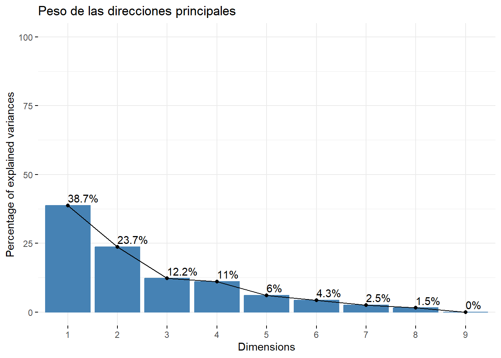
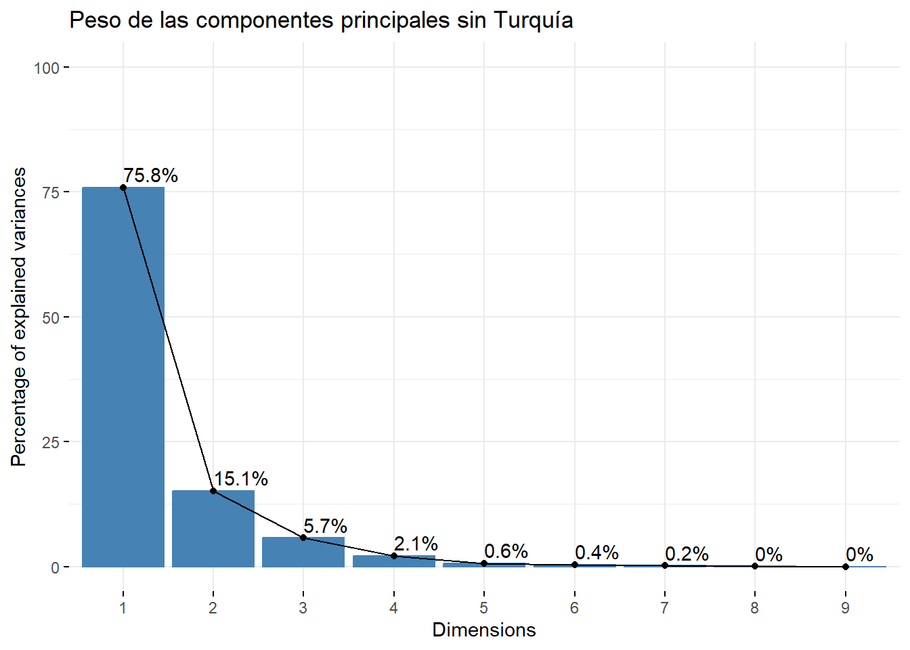

Entrega 5
Considera los datos “europa.dat” que están disponibles en Aula Digital. Los datos corresponden a los porcentajes de población empleados en diferentes actividades económicas en Europa para el año 1979. Las variables consideradas son:
Agricultura, Minas, Fábricas, Suministro Eléctrico, Construcción, Industrias de Servicio, Finanzas, Servicios Sociales y Personales y, Transporte y Comunicaciones.
Utiliza el método de componentes principales para reducir el número de variables, y tratar de determinar grupos de países con comportamientos semejantes en la distribución de su fuerza de trabajo. En este caso, usa la matriz de covarianza para el cálculo de las componentes principales, ya que todos los datos están medidos en la misma escala (porcentaje de la población) y por las caractersticas de los datos, no parece una buena idea considerarlos todos de igual manera.
Agr Min Fab Ene Con IS Fin SSP TC
Belgica 3.3 0.9 27.6 0.9 8.2 19.1 6.2 26.6 7.2
Dinamarca 9.2 0.1 21.8 0.6 8.3 14.6 6.5 32.2 7.1
Francia 10.8 0.8 27.5 0.9 8.9 16.8 6.0 22.6 5.7
Alemania Occidental 6.7 1.3 35.8 0.9 7.3 14.4 5.0 22.3 6.1
Irlanda 23.2 1.0 20.7 1.3 7.5 16.8 2.8 20.8 6.1
Italia 15.9 0.6 27.6 0.5 10.0 18.1 1.6 20.1 5.7
Luxemburgo 7.7 3.1 30.8 0.8 9.2 18.5 4.6 19.2 6.2
Holanda 6.3 0.1 22.5 1.0 9.9 18.0 6.8 28.5 6.8
Inglaterra 2.7 1.4 30.2 1.4 6.9 16.9 5.7 28.3 6.4
Austria 12.7 1.1 30.2 1.4 9.0 16.8 4.9 16.8 7.0
Finlandia 13.0 0.4 25.9 1.3 7.4 14.7 5.5 24.3 7.6
Grecia 41.4 0.6 17.6 0.6 8.1 11.5 2.4 11.0 6.7
Noruega 9.0 0.5 22.4 0.8 8.6 16.9 4.7 27.6 9.4
Portugal 27.8 0.3 24.5 0.6 8.4 13.3 2.7 16.7 5.7
Espana 22.9 0.8 28.5 0.7 11.5 9.7 8.5 11.8 5.5
Suecia 6.1 0.4 25.9 0.8 7.2 14.4 6.0 32.4 6.8
Suiza 7.7 0.2 37.8 0.8 9.5 17.5 5.3 15.4 5.7
Turquia 66.8 0.7 7.9 0.1 2.8 5.2 1.1 11.9 3.2
Bulgaria 23.6 1.9 32.3 0.6 7.9 8.0 0.7 18.2 6.7
Checoslovaquia 16.5 2.9 35.5 1.2 8.7 9.2 0.9 17.9 7.0
Alemania Oriental 4.2 2.9 41.2 1.3 7.6 11.2 1.2 22.1 8.4
Hungria 21.7 3.1 29.6 1.9 8.2 9.4 0.9 17.2 8.0
Polonia 31.1 2.5 25.7 0.9 8.4 7.5 0.9 16.1 6.9
Rumania 34.7 2.1 30.1 0.6 8.7 5.9 1.3 11.7 5.0
Union Sovietica 23.7 1.4 25.8 0.6 9.2 6.1 0.5 23.6 9.3
Yugoslavia 48.7 1.5 16.8 1.1 4.9 6.4 11.3 5.3 4.0Lo primero que hacemos es revisar si las variables están correlacionadas, requisito necesario para obtener una representación más simple de éstas.
Agr Min Fab Ene Con IS
Agr 1.00000000 0.03579884 -0.6710976 -0.40005113 -0.53832522 -0.7369805
Min 0.03579884 1.00000000 0.4451960 0.40545524 -0.02559781 -0.3965646
Fab -0.67109759 0.44519601 1.0000000 0.38534593 0.49447949 0.2038263
Ene -0.40005113 0.40545524 0.3853459 1.00000000 0.05988883 0.2019066
Con -0.53832522 -0.02559781 0.4944795 0.05988883 1.00000000 0.3560216
IS -0.73698054 -0.39656456 0.2038263 0.20190661 0.35602160 1.0000000
Fin -0.21983645 -0.44268311 -0.1558288 0.10986158 0.01628255 0.3655553
SSP -0.74679001 -0.28101212 0.1541714 0.13241132 0.15824309 0.5721728
TC -0.56492047 0.15662892 0.3506925 0.37523116 0.38766214 0.1875543
Fin SSP TC
Agr -0.21983645 -0.7467900 -0.5649205
Min -0.44268311 -0.2810121 0.1566289
Fab -0.15582884 0.1541714 0.3506925
Ene 0.10986158 0.1324113 0.3752312
Con 0.01628255 0.1582431 0.3876621
IS 0.36555529 0.5721728 0.1875543
Fin 1.00000000 0.1076403 -0.2459257
SSP 0.10764028 1.0000000 0.5678669
TC -0.24592567 0.5678669 1.0000000Calculamos las componentes con los datos escalados con la librería factoextra
Los valores propios muestran el porcentaje de varianza explicada por cada componente principal.
eigenvalue variance.percent cumulative.variance.percent
Dim.1 3.4871512725 3.874613e+01 38.74613
Dim.2 2.1301731410 2.366859e+01 62.41472
Dim.3 1.0989576113 1.221064e+01 74.62536
Dim.4 0.9944829778 1.104981e+01 85.67517
Dim.5 0.5432177255 6.035753e+00 91.71092
Dim.6 0.3834276658 4.260307e+00 95.97123
Dim.7 0.2257540553 2.508378e+00 98.47960
Dim.8 0.1367899257 1.519888e+00 99.99949
Dim.9 0.0000456251 5.069456e-04 100.00000Un método alternativo para determinar el número de componentes principales es observar el diagrama de valores propios ordenados de mayor a menor. El número de componentes se determina en el punto, más allá del cual los valores propios restantes son todos relativamente pequeños y de tamaño comparable.

Observamos que las tres primeras componentes principales explican aproximadamente el 74.6% de la variación total. Pese a que, si incorporásemos una componente más podríamos alcanzar un nivel del 85%, vemos conveniente reducir el número de variable a 3 a fin de obtener quizás representaciones que incluyan menos información pero quizás más significativa. Por ello trabajaremos con esas tres componentes para el análisis que sigue a continuación.
Procedemos ahora a realizar los cruces de las distintas componentes principales.
Cruce D1 vs D2:
Tenemos dos tipos de gráficas que podemos hacer:
- Círculo de Correlación Variable:
En este gráfico se agrupan las variables que tengan correlación positiva. Si acudimos a la matriz de correlación veremos que, por ejemplo, agricultura mantiene correlación negativa con todas las demás variables (y por ello está en la mitad derecha de la circunferencia).



